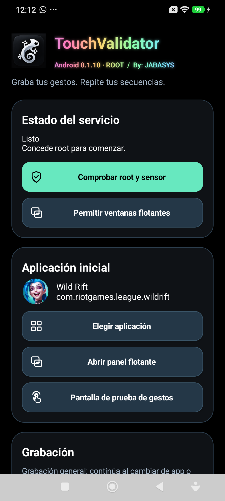
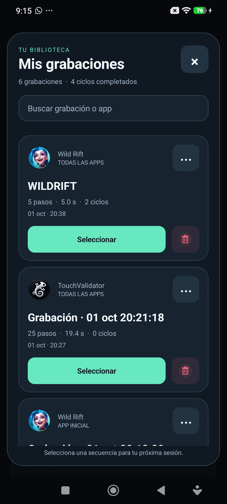

Empieza con tus gestos.
Toques, deslizamientos, pulsaciones largas y pausas. Graba el recorrido de tu dedo desde el panel flotante.
Hasta 500 pasos por secuenciaPARA ANDROID & IOS
Graba lo que haces en pantalla y conviértelo en una secuencia. Guárdala, ajusta el ritmo y vuelve a ejecutarla cuando la necesites.
Necesitas root en Android o jailbreak en iOS.

Captura real de la app · Android 0.1.10
LA APP, POR DENTRO
Cada recorrido tiene sus tiempos.
TouchValidator te permite conservarlos
y decidir cómo repetirlos.

Toques, deslizamientos, pulsaciones largas y pausas. Graba el recorrido de tu dedo desde el panel flotante.
Hasta 500 pasos por secuenciaPonle un nombre, edita los pasos y encuentra cada grabación en tu biblioteca. También puedes exportar un respaldo.
Hasta 100 grabaciones guardadasElige la velocidad, los ciclos y el tiempo de inicio. Revisa la pantalla de destino y autoriza la reproducción.
Velocidades de 0.25× a 2×El control sigue en tus manos. Mantén Volumen abajo para pausar o acceder a los controles de la sesión.
MÍRALO EN MOVIMIENTO
Una demostración animada de 26 segundos.
Así se graba, se guarda y se reproduce.
Demostración ilustrativa: se graban dos toques y un deslizamiento. La secuencia se guarda como Rutina 01 y se reproduce dos veces a velocidad 2×.
El gesto empieza contigo.
TouchValidator repite coordenadas y tiempos. Si la pantalla cambia, revisa tu secuencia antes de ejecutarla.
PRUÉBALO EN TU DISPOSITIVO
Elige tu sistema y revisa los requisitos antes de instalar. Estas son las versiones de prueba disponibles.
Archivo de instalación · Descarga directa
Versión 0.1.10 · APK · 509 KB
Lo que necesitas
Compilación de desarrollo para pruebas. La versión actual permite depuración; no es una versión de producción.
ANTES DE EMPEZAR
Android necesita root y una ROM compatible con la captura e inyección de gestos. Se ha probado en un POCO F5 Pro. iOS necesita un jailbreak rootless compatible con Dopamine. La compatibilidad depende del dispositivo y del sistema.
Descarga el APK para Android o el DEB para iOS desde esta página. En la sección de descarga encontrarás los pasos para tu sistema. Las versiones actuales se distribuyen por instalación directa.
Sí. Puedes cambiar coordenadas y tiempos, ordenar pasos, añadir pausas y guardar una copia. La biblioteca también permite renombrar, duplicar y exportar tus secuencias.
Mantén Volumen abajo para pausar o acceder a los controles. Usa «Detener» o «Terminar sesión» para finalizar. En Android también tienes «Detener» en la notificación del servicio.
La app reproduce coordenadas y tiempos; no reconoce botones. Si cambia la interfaz, comprueba la grabación de nuevo. Usa primero la pantalla de prueba y conserva compras, pagos y cambios de cuenta como acciones manuales.
Android usa una compilación de desarrollo. La versión iOS tiene un problema conocido de autenticación de su servicio local y debe usarse únicamente en un dispositivo de pruebas hasta corregirlo.